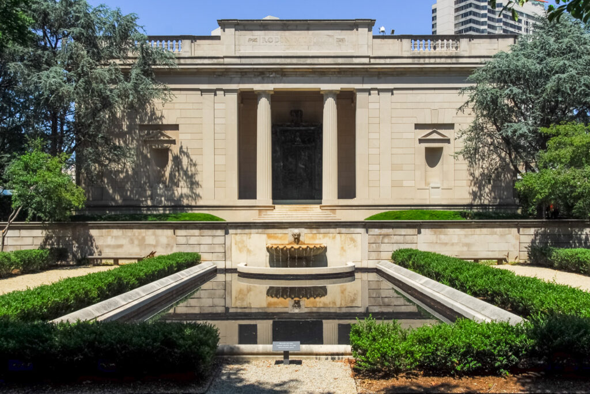
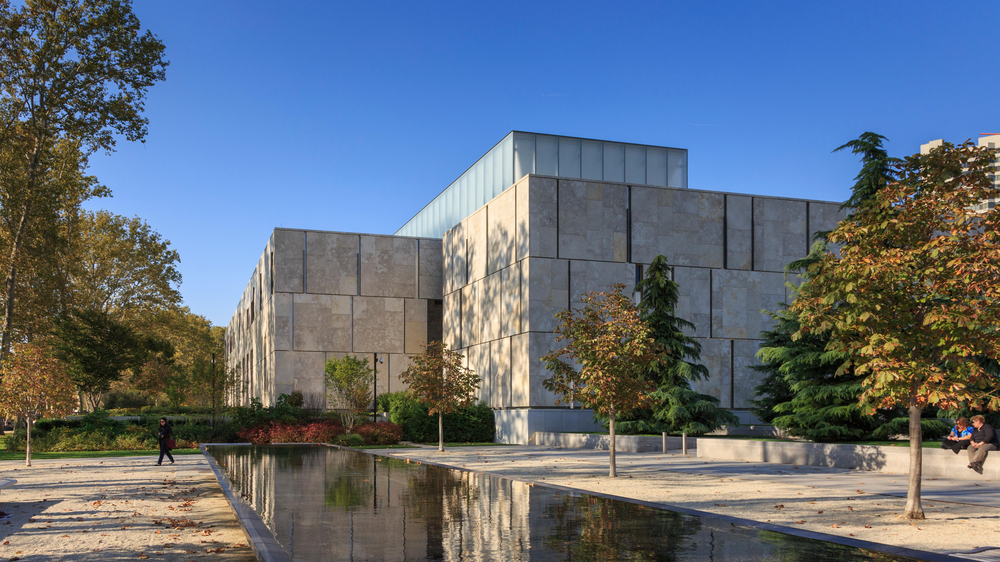
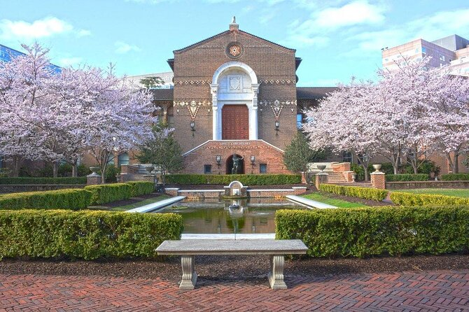
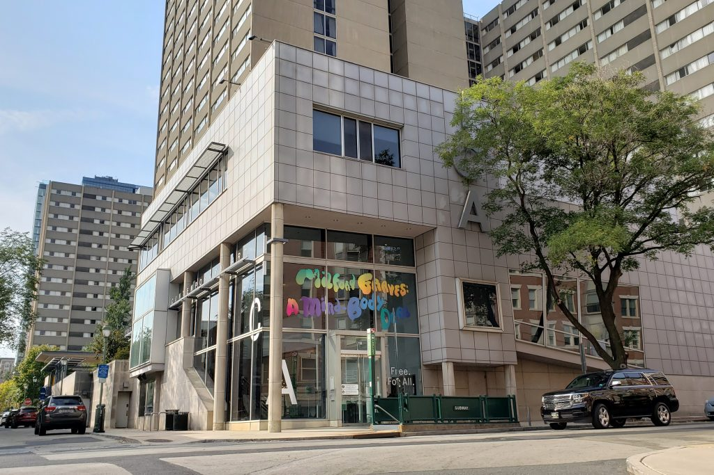
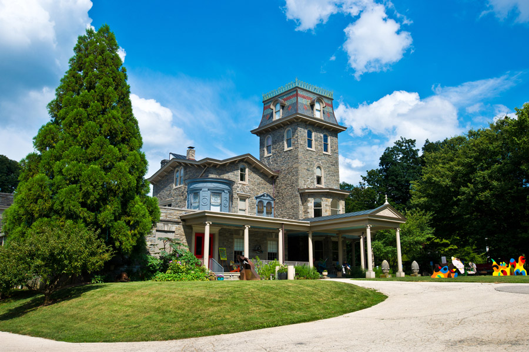

For nearly 150 years, the museum has reflected the unique passions of Philadelphia collectors and curators. Discover the key moments, exhibitions, and artworks that shaped the museum today.
Located: 2600 Benjamin Franklin Parkway
Phone: (215) 763-8100
Prices
The Rodin Museum, situated in Philadelphia, Pennsylvania, houses a substantial compilation of works by the artist Auguste Rodin, rivaled in size only by collections in Paris. Established in 1929, this museum is overseen by the Philadelphia Museum of Art.
Located: 2151 Benjamin Franklin Parkway
Phone: (215) 763-8100
Hours:
Prices:
Philadelphia art collector Albert C. Barnes (1872–1951) chartered the Barnes in 1922 to teach people from all walks of life how to look at art. Over three decades, he collected some of the world’s most important impressionist, post-impressionist, and modern paintings, including works by Renoir, Cézanne, Matisse, and Picasso. He displayed them alongside African masks, native American jewelry, Greek antiquities, and decorative metalwork.
The mission of the Barnes is to promote the advancement of education and the appreciation of the fine arts and horticulture.
Located: 2025 Benjamin Franklin Parkway
Phone: (215) 278-7000
Hours: Thursday-Monday | 11am-5pm
Members: 10am-5pm
Prices:
As the first art school and museum in the United States, PAFA celebrates the transformative power of art and art-making.
Founded in 1805, the Pennsylvania Academy of the Fine Arts offers undergraduate and graduate programs in the fine arts, innovative exhibitions of historic and contemporary American art, and a world-class collection of American art. A recipient of the National Medal of Arts, PAFA’s esteemed alumni include Mary Cassatt, Njideka Akunyili Crosby, Thomas Eakins, William Glackens, Barkley L. Hendricks, Violet Oakley, Louis Kahn, David Lynch, and Henry Ossawa Tanner.
Located: 118-128 N. Broad Street
Phone: (215) 972-7600
Hours:
Prices:
The Penn Museum respectfully acknowledges that it is situated on Lenapehoking, the ancestral and spiritual homeland of the Unami Lenape.
Home to over a million extraordinary artifacts and archaeological finds, the Penn Museum has been uncovering our shared humanity across continents and millennia since 1887. In bridging archaeology (the study of objects made by humans), with anthropology, (the science of humanity), we chart a course for finding one’s own place in the arc of human history.
The Penn Museum is dedicated to telling powerful stories that emerge from our own excavations and research across the world.
Located: 3260 South Street
Phone: (215) 898-4000
Hours: Tuesday-Sunday | 10am-5pm
Prices:
The Institute of Contemporary Art at the University of Pennsylvania believes in the power of art and artists to inform and inspire. The ICA is free for all to engage and connect with the art of our time.
Since the 1963 founding, ICA exhibitions have aimed to bring under-recognized artists to the attention of the broader world.
It is this continued commitment to both accessibility and risk-taking that prompted New York Times art critic Roberta Smith to declare ICA “among the most adventuresome showcases in the country where art since 1970 is concerned…”
Located: 118 S. 36th Street
Phone: (215) 898-5911
Hours: Wednesday-Sunday | 12-6pm
Free admission courtesy of Amanda and Glenn Fuhrman
The core of Woodmere’s collection is the gift of Charles Knox Smith (1845 – 1916). Throughout the year, Woodmere offers family events, tours, gallery talks, lectures, panel discussions, studio art classes, film, and music performances. Woodmere offers the experience of art and nature together with a growing collection of sculpture installations across its six green acres. Complemented by an interactive map, WOW, Woodmere’s Outdoor Wonder, brings together monumental outdoor sculpture, horticulture, environmental conservation, and education.
Woodmere is accredited by the American Alliance of Museums, a distinction held by only approximately three percent of museums nationwide. On the National Register of Historic Places, Woodmere is designated a significant structure that contributes to the historic character of the Chestnut Hill Historic District.
Located: 9201 Germantown Avenue, Chestnut Hill, Philadelphia, PA
Phone: (215) 247-0476
Hours:
Prices: